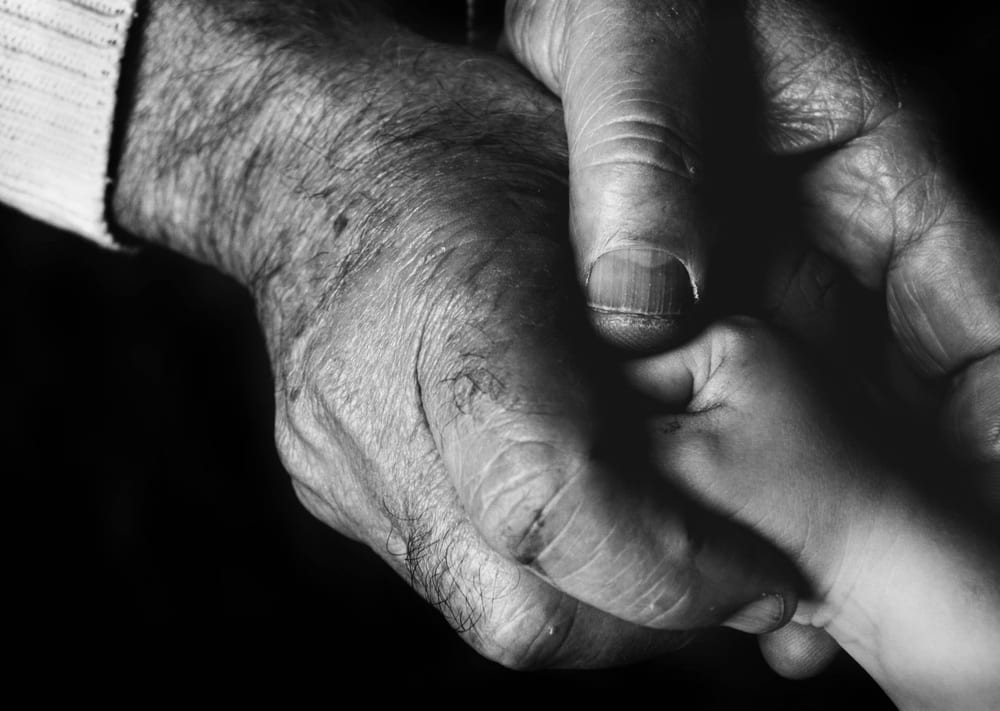

Two attorneys, one office manager, and the only law we practice: wills, trusts and probate. Plain English, no hurry, and every flat fee printed further down this page.
Admitted in Rhode Island. Our practice is limited to estate work, and it has been since 2009.
If someone has died, start here instead. Not ready to talk out loud? Write to us; Denise calls back when you say so.
The questions people are embarrassed to ask.
Half the people in our chairs apologize before asking something. Please do not. These are the six we hear most weeks, answered the way we answer them out loud.
The house is in both our names. Do we really need wills?
Joint ownership answers the first death, not the second, and it says nothing about who raises your children. The wills answer both. For most couples, the whole set is the $750 on this page.
My mother died three weeks ago. Am I already late on something?
No. Rhode Island does not expect anything from you this month. Order a few extra death certificates, keep the bills unpaid in one folder, and call when you are ready. Nothing is overdue this week.
What happens if we never get around to it?
The state has a plan for people without one. It usually picks the right people in the wrong way: slower, more public, with a judge at every step. A will replaces that plan with yours.
Aren't trusts for people with more money than us?
Usually, yes. If your property sits in one state, the will set does the work. A trust earns its fee when there is a second state, or a house you want to keep out of court entirely. We tell you which you are before you have paid us anything.
Can you meet my father without me in the room?
We insist on it. The person signing is the client, so at least once we sit with him alone. It protects him, and it protects the plan. You will get the summary he wants you to have.
What does it cost to find out what this will cost?
Nothing. The first call is free, the fees are flat, and every one of them is printed just below.
The prices, before you ask.
You should not have to sit through a meeting to learn a number. These are flat, they are current, and the one we write in your engagement letter is the one on the bill.
Where most people land
A will, with the papers that go with it
The will, a durable power of attorney and a health care proxy. Drafted, read aloud with you, then signed and witnessed here. One visit to sign, and there is no version that costs more. For a married couple it is two of everything, planned in the same sitting so the documents never contradict each other.
$450 flat, one person$750 flat, a married coupleThree documents each. One signing.
A deed, prepared and recorded
Adding a spouse, a life estate, or moving the house into a trust. Recorded at the clerk, stamped copy mailed to you.
$650 flat
A revocable living trust, funded
For property in more than one state, or a house that should skip court entirely. The fee includes moving the deed and accounts in, the step people skip.
$3,400 flat
Probate is the one number we will not print blind. It depends on the estate, so yours is quoted in writing after the first meeting. A straightforward Providence estate, one house, a few accounts, nobody objecting, has usually run $3,500 to $7,500. That range is a reference, not a promise. And the call that tells you whether the estate needs probate at all costs nothing.
The right day to sign a will looks exactly this ordinary.
While everyone is well.
The best time to sign a will is a boring Tuesday. Nobody is sick, nobody is arguing, and the whole thing takes two short visits about five weeks apart. Here is what the $450 actually buys.
The will
Who gets what, and who is in charge of making it happen. If you have children under eighteen, it is also where their guardian is named, which is the real reason young parents come in.
The durable power of attorney
Somebody you trust can pay the mortgage and talk to the bank if you cannot. Without it, your family asks a court for permission to help you.
The health care proxy
One named voice for the doctors, so a hard week does not also become a family argument at the nurses' station.
All three are in the $450, read at your own table before you sign anything at ours. How the five weeks go
If someone has died, start here.
This part of the page moves slower on purpose. Nothing in it is urgent today, including calling us.
This week
Let the funeral home order more death certificates than you think you need; ten is normal. Put the mail and the bills in one folder, unpaid. Do not spend your own money on the estate's debts, and do not let anyone hurry you.
When you are ready
One phone call. We ask what there was and how it was owned, and we tell you whether probate is needed at all. Often it is not. That call costs nothing, whoever ends up answering it.
If probate is needed
In Rhode Island it happens at the town hall, paperwork and waiting, not a courtroom drama. We file, the court appoints you, and a straightforward estate usually runs nine to fourteen months, most of it a creditor period the statute sets. A reference, not a promise.

What all of this paperwork is actually for.
If there was no will, that is common and it does not stop anything. The answer to “what happens if we never got around to it” is up in the questions, and the first call still tells you what, if anything, is needed.
Claire and Sophea, at the table where first meetings happen.
The people across the table.
Three of us, on purpose. The attorney you meet first is the attorney who drafts your documents, and the one who answers when you call back.
Claire BotelhoAttorney · admitted in Rhode Island, 2009
East Providence born, and estate work has been the whole practice since the year she was admitted. She reads every draft aloud before it leaves the office, and hers is the voice on most first calls.
Sophea ChhimAttorney · admitted in Rhode Island, 2015
Spent four years at a legal aid desk before this one, walking people through documents they had every reason to distrust. The trust work here is mostly in her hands.
Denise FurtadoOffice manager
Keeps every file and returns every call, usually the same day. Will tell you plainly if we are not the right office for your problem.
What we do not do. Our practice is limited to wills, trusts, powers of attorney and probate. No lawsuits, no injury cases. If that is what you need, we will hand you two good names instead.
Falamos português.Khmer spoken.
How the five weeks go.
One.
The call ten minutes
You tell Denise what is going on. If we are not the right office, she says so on that same call.
Two.
The table forty minutes
We ask what you own and who you love. No documents needed, nothing decided yet, and no charge for the meeting: if you decide not to go ahead, you owe nothing.
Three.
The draft about ten days
Paper, in your mailbox, with the passages that decide something flagged in the margin. Read it at home.
Four.
The signing twenty minutes
Witnesses and a notary, here. You leave with the originals; a copy stays in our safe with your name on it.
Five weeks assumes nothing is pressing. If someone is ill, or a surgery is scheduled, or a flight is booked, say so on the phone and we compress it. That is normal here, not an imposition.
What people mention afterwards.
They never once looked at a clock while I talked.
Marie L., Providence
I walked in embarrassed by what I did not know. Nobody made me feel it.
Doug S., Pawtucket
The number on this website was the number on the bill.
Carol and Ed W., Riverside
Come sit down, or we will come to you.
Hospitals, rehab wings and kitchen tables count as offices when somebody cannot travel. No charge for the trip, anywhere in Rhode Island.
The office1140 Wickenden Street, Providence, Rhode Island 02903. Street level, one step at the door. Parking in the small lot behind the building, off Governor Street.
HoursMonday to Thursday, nine to five. Friday, nine to one. Tuesday evenings for people who cannot leave work.
Telephone(401) 555-0164A person answers. If nobody can, leave the message and Denise calls back the same day.